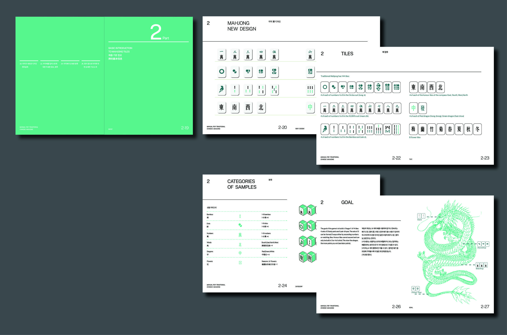
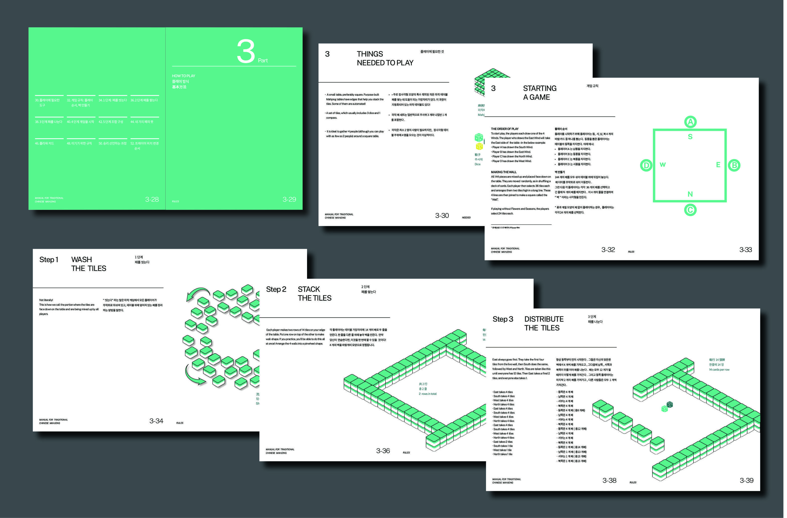
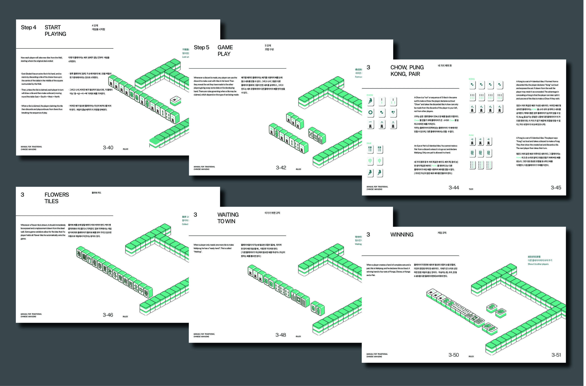
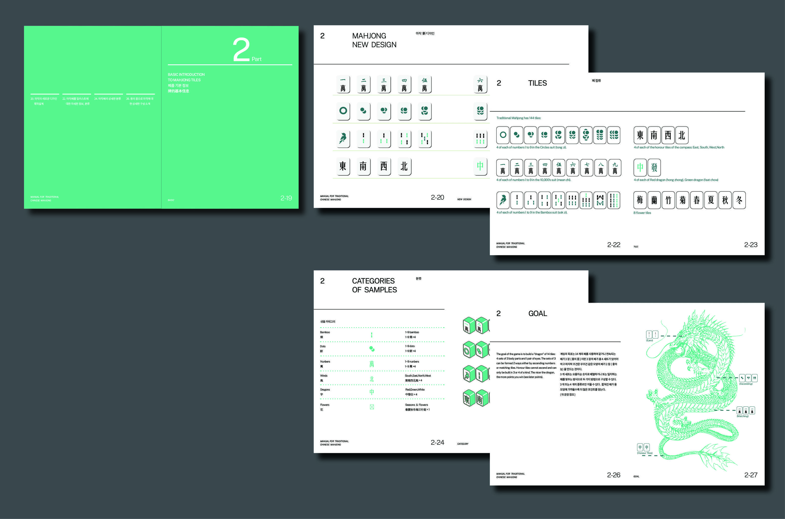
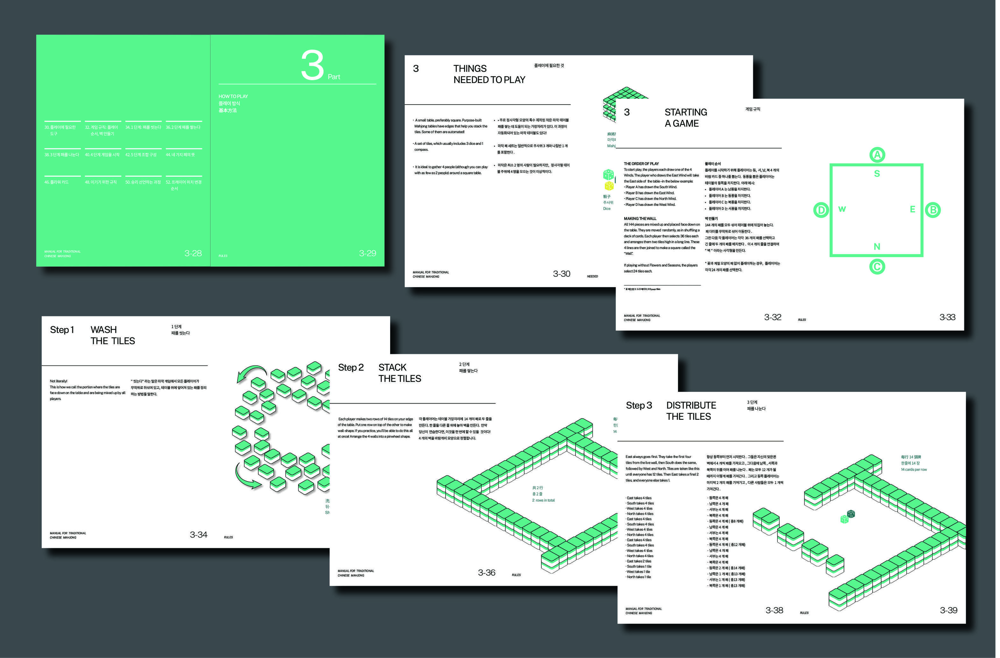
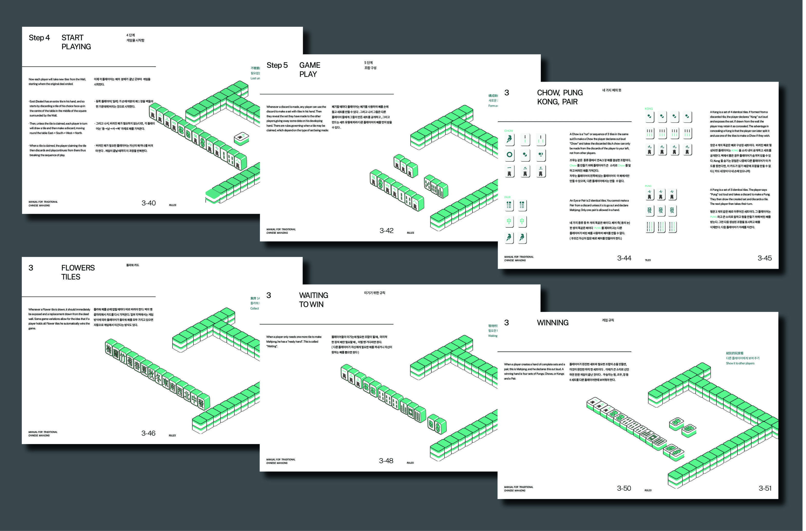

중국 전통 마작 메뉴얼
전통 마작에 관한 사용 메뉴얼입니다. 마작은 최근 전세계를 휩쓴 오락의 전통게게임입니다. 마작, 혹은 참새는 중국 고대에 발명된 게임 놀이로, 패류 오락 도구라고도 한다.대나무, 뼈, 플라스틱으로 만든 작고 긴 사각형 패를 그 위에 꽃무늬나 글씨가 새겨져 있고 한 세트당 144장이다.서로 다른 지역의 게임 규칙은 약간 다르지만 기본 목표는 치환과 취사선택 규칙을 통한 만들고 상대가 같은 목적을 달성하는 것을 막는다. 마작의 조합 방식은 변화무쌍하고,약간의 운기 빼고는,기교를 전략적으로 운용도 아주중요합니다. 본 책자는 처음부터 마작을 다시 설계하였다.마작의 게임규칙과 역사부분를 소개하고, 쉽고 간단한 일러스트 설명을 삽입함으로써 전통 놀이에 대한 대중적 흥미를 높이는 작업을 했습니다.
추이이 664365867@qq.com

 




